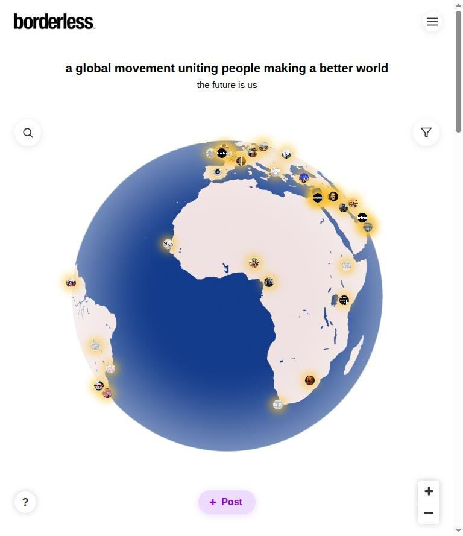
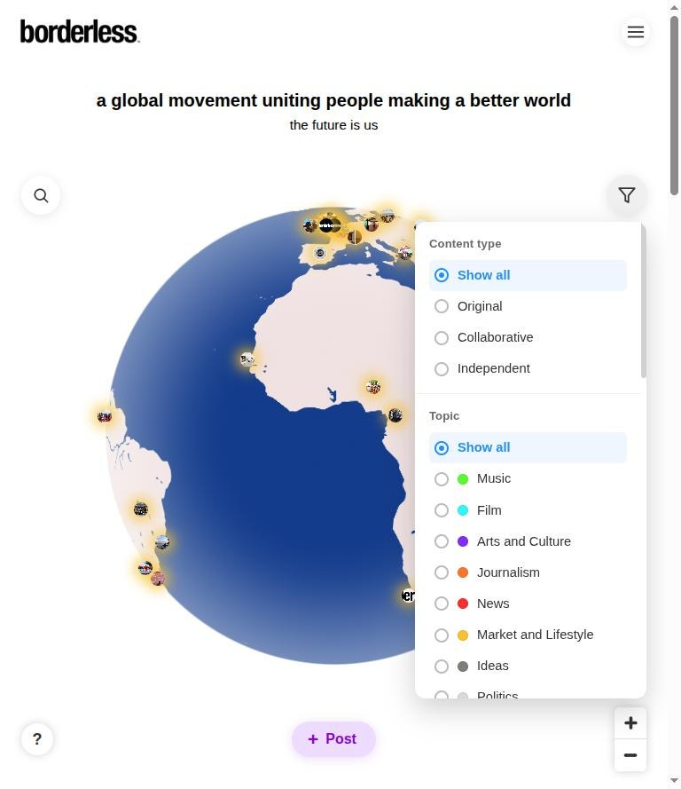
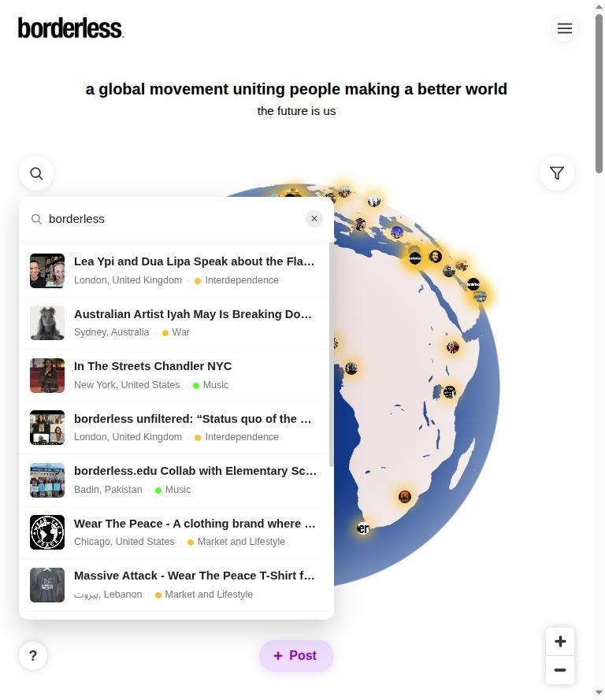
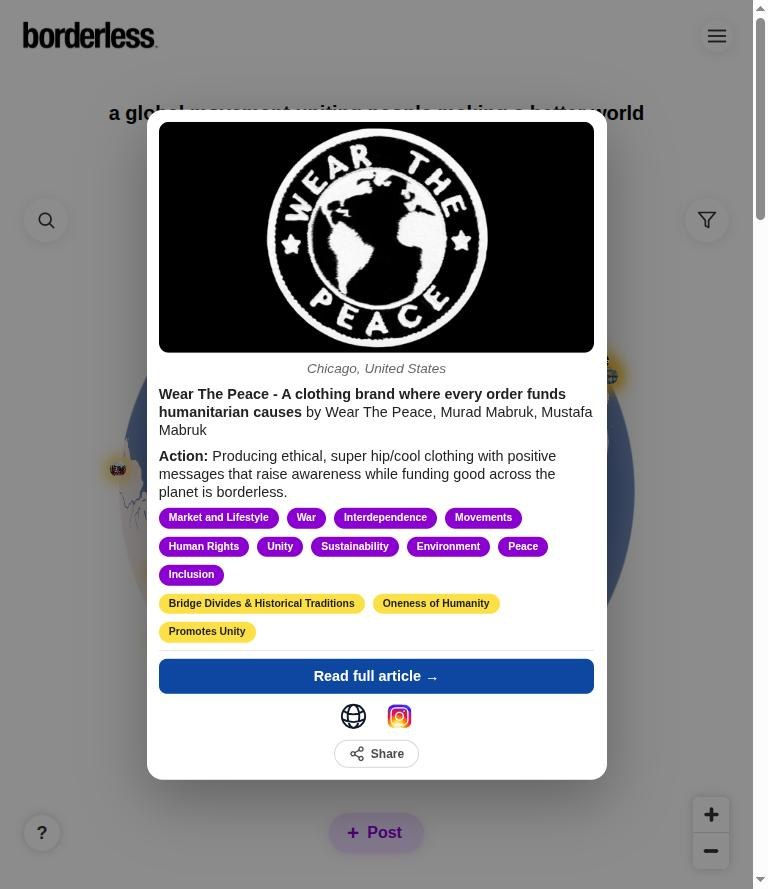
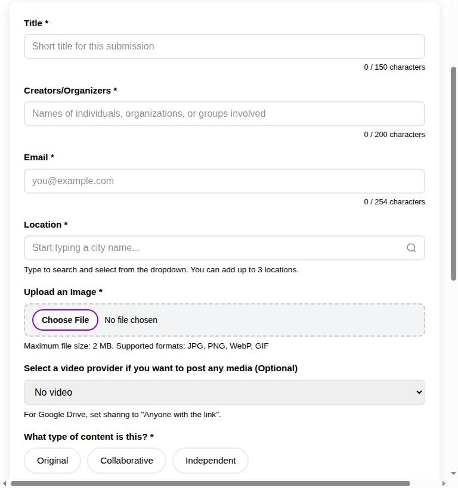
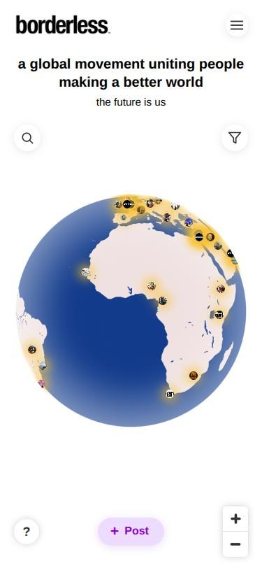
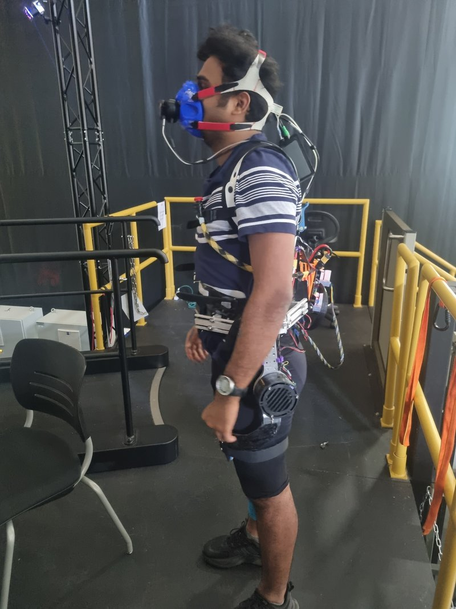
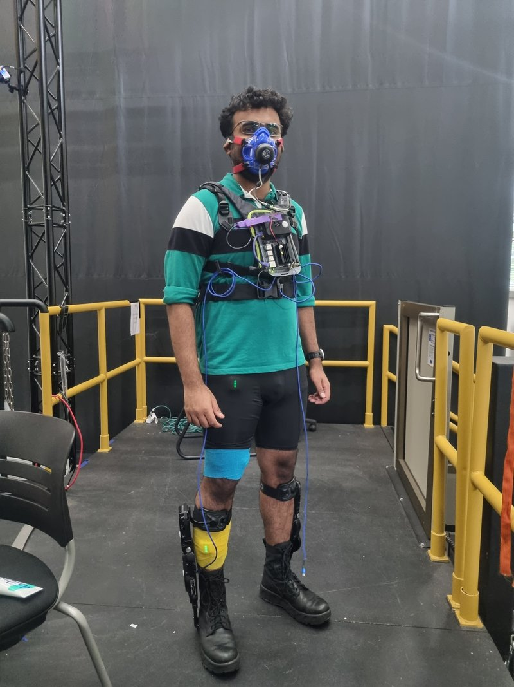

Industry and internship roles. For research positions and publications, see the Research section.






Screenshots of the live site, October 2026. Click any image to enlarge it.
borderless is a global movement and storytelling network that collects and shares stories of positive change from people across five continents, alongside its podcast, open conversations, and campaigns.
Before the platform, the team managed its content through manual, spreadsheet-based workflows. I led the effort to turn the team's needs into a scalable web platform, from ideation and requirements through design, development, and deployment, and moved the content workflow from spreadsheets to a database-driven system with a public site, a moderation dashboard, and a REST API.
A Mapbox globe of every approved story, with marker clustering, rich story popups, filters by content type, topic, and borderless values, text search, and shareable deep links that open the globe on a specific story.
A validated submission form supporting up to three locations per story with location autocomplete, image uploads, either an inline story or a linked document, and the option to propose new topics.
An admin dashboard where every submission waits for review and can be approved, rejected, or sent back with requested edits. Each decision triggers a transactional email to the contributor.
When edits are requested, the contributor receives a one-time, expiring link to revise their own story without an account. Revised stories go back into the review queue.
Tools for the team to curate featured, trending, podcast, and conversation lists, and to link related stories into connection groups that appear as "Also see" links on the globe.
A command-line import tool that brought the organization's existing archive onto the platform, with validation, geocoding, duplicate detection, and a dry-run mode. Details below.
Nothing reaches the public globe without review. Every story moves through four states, and only approved stories are visible on the site or through the public API.
↺ A contributor's revision through the edit link sends the story back to Pending review.
External services: Mapbox for the globe and geocoding · Postmark for transactional email
The data model treats locations and categories as first-class: each story can have up to three locations stored in their own table, and content types, topics, and borderless values are many-to-many relationships, so one story can appear under several filters without duplication. Topics proposed by contributors are held separately and promoted into the official taxonomy only when the story is approved.
The organization already had hundreds of stories collected outside the platform. Rather than re-entering them by hand, I built an import pipeline:
Across two batches, 310 of 320 entries were imported; the other 10 were caught by the duplicate check.
Because the platform accepts public submissions and stores contributors' contact details, I designed it with privacy and abuse protection in mind:
Worked with a Ph.D. student to improve the electrical and mechanical design of a hip exoskeleton. I cleaned up the circuits, fabricated new PCBs, 3D-printed replacements for worn-out clips, and reinforced components to reduce vibration and eliminate circuit failures.
I also ran data collection for human-subject trials, gathering about 60 hours of respiratory and EMG data that lab researchers used to assess metabolic cost and muscle activity.


I led the setup of a new robotics lab at Habib University, building experiment benches with PhantomX manipulators and Intel RealSense D435i depth cameras.
For a robot soccer project, I engineered a 6 × 8 ft arena with a camera-based tracking system, written in Python and C, so students could test their robots.